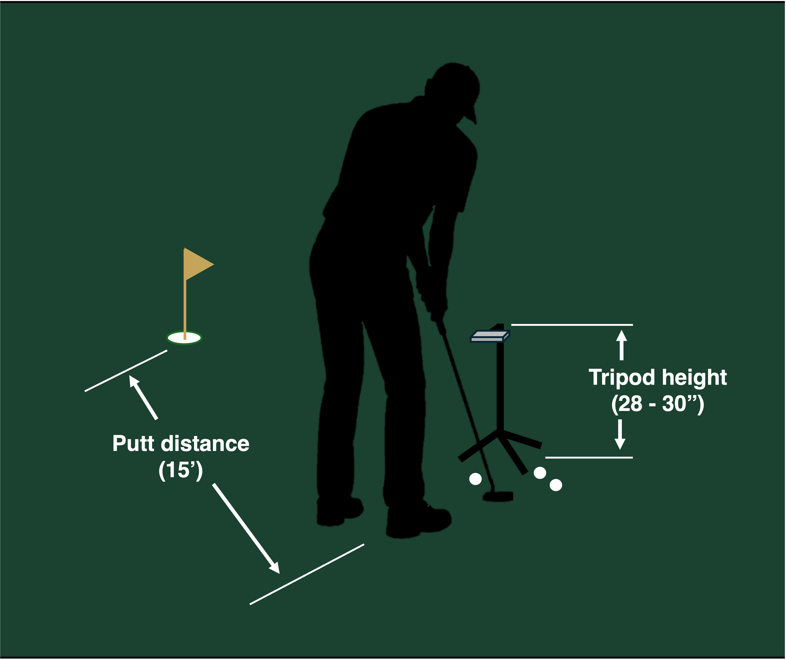

PuttrLab uses your iPhone's camera to track a small printed marker attached to your putter head. By mounting your phone on a tripod with the camera facing downward, the app can precisely track your putter's motion through the entire stroke — from takeaway through impact and follow-through.
No Bluetooth pairing. No charging sensors. No calibration. Just set up, start putting, and get data.
Secure a PuttrLab tracking marker to the top of your putter head using double-sided tape. The marker should sit flat and not move during the stroke. It works with both blade and mallet putters.

Mount your iPhone on a tripod in landscape orientation with the camera facing downward toward the ball. Position the tripod so the camera has a clear view of the marker throughout your entire stroke — takeaway to follow-through. The phone screen should face upward so you can see the live feed. We recommend a tripod height of 28-30" (about mid-thigh height for a 6' individual) and a maximum putt length of 15' on a standard putting surface with a stimp rating of 10.

Open the app, select how many putts you want to track for your session, and position yourself so the marker is visible in the camera preview. The app will confirm when the marker is detected.

Take your putts naturally. PuttrLab tracks each stroke automatically and records the key metrics. When your session is complete, review your data for that session.
PuttrLab uses the same type of visual tracking technology used in robotics and augmented reality. These tracking markers are specifically designed to be detected and tracked with high precision by cameras, even in varying lighting conditions. By tracking the marker's position and rotation frame by frame, PuttrLab can calculate exactly how your putter moves through the stroke.
This approach means no electronic sensors on your club, no added weight to your putter, and no batteries to charge. The marker weighs almost nothing, and the tracking accuracy is excellent for putts at 15 feet and under.
PuttrLab is optimized for putts of 15 feet and under — the range where stroke consistency matters most and especially where amateur golfers have the most room to improve. This is the range where most par-saving putts happen, and where even small improvements in face angle and tempo can translate directly into lower scores.
Use PuttrLab on the practice green at your local course, in your backyard, or on an indoor putting mat. It's your personal putting lab, wherever you practice.